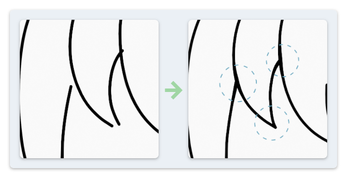
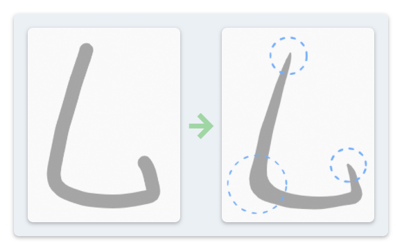

Stroke Tuning #
This group of operators is designed to perform some fine adjustments on the position and/or thickness of a line art.
Pinch #
This operator closes the gaps between each pair of selected strokes if any of their tips are close together. The user can set a Transition value to determine whether to move the whole stroke or just move the tips.
The operation does not apply for the case where 3 or more strokes have their tips in proximity. In that case, only two of them will be merged.

By enabling the Consider Intermediate Points option, this operator can also be used to process the case where a tip of one stroke is close to the middle part of another stroke. The line points in the contact region can be thickened, in order to emulate an effect of contact shadow.
Taper #
This operator changes the thickness of each selected stroke to make it look more natural, for example, to emulate the pressure sensitivity without having the corresponding input device.

It changes the radius of points at:
- Starting/End Points: The user can decide the impact range.
- Turning Points: The radius will be changed according to the point curvature. By default, these points will be thickened, but the user can also choose to thin them.